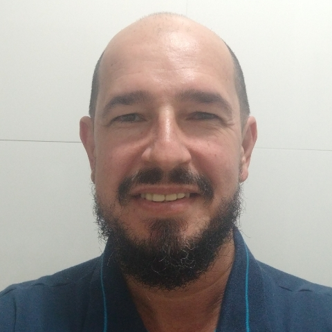

PORTIFÓLIO
Consultor de TI
Consultoria para
implantação de rede cliente-servidor em empresa de médio porte.
Abril de 2020
Analista de sistemas
Suporte e análise de sistemas
industriais de chão de fábrica, em empresa de grande porte.
Julho de 2017
Coordenador de TI
Suporte a infraestrutura de redes,
implantação de sistemas, suporte a usuários e projetos de TI.
Março de 2005
Técnico de Informática
Montagem e manutenção de micros,
instalação de sistemas, suporte a usuários.
Março de 2003
Desenvolvedor Web
Em desenvolvimento.
Junho de 2021